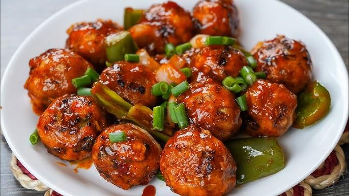

Home

Fig. A freshly prepared delicious Manchurian bowl
Description:
Manchurian is a popular Indian Chinese dish, particularly in India, known for its flavorful, sweet, spicy, and tangy gravy or sauce.
It typically involves deep-fried vegetable or meat balls or pieces, tossed in a vibrant sauce.
There are two different variants of Manchurian: dry or semi-dry, and with gravy. Both variants are prepared by using common ingredients like corn flour,
white flour, spring onion, bell peppers, soy sauce, chili sauce, minced garlic, and ground pepper, and are typically garnished with spring onion.
Ingredients
Manchurian Balls:
Cabbage (Chopped)
Carrot (grated)
Capsicum (optional)
Spring onion (optional)
Ginger-Garlic paste
Green chili (finely chopped)
Corn flour
All-purpose flour (maida)
Salt
Pepper
Oil (for frying)
Manchurian Sauce:
Garlic (finely chopped)
Ginger (finely chopped)
Green chilies (optional)
Onion (chopped or spring onions)
Soy sauce
Tomato ketchup
Chili sauce
Vinegar
Corn flour (mixed with water – for slurry)
Water
Salt
Pepper
Oil
Steps:
Step 1: Make the Manchurian Balls
In a bowl, combine cabbage, carrot, capsicum, spring onion, green chili, ginger-garlic paste.
Add corn flour, all-purpose flour, salt, and pepper. Mix well. (No need to add water — the veggies release moisture.)
Form small balls from the mixture.
Heat oil in a pan and fry the balls on medium heat until golden brown. Drain and set aside.
Step 2: Prepare the Sauce
Heat 1-2 tbsp oil in a pan. Add chopped garlic, ginger, and green chili. Sauté for a few seconds.
Add chopped onions or spring onions and cook until slightly soft.
Stir in soy sauce, tomato ketchup, chili sauce, and vinegar. Mix well.
Mix 1 tbsp corn flour with ¼ cup water and add it to the sauce. Stir until it thickens slightly.
Optional - For gravy version, add more water and let it simmer for a minute.
Add salt and pepper to taste
Step 3: Combine & Serve
Add fried Manchurian balls to the sauce. Toss gently to coat.